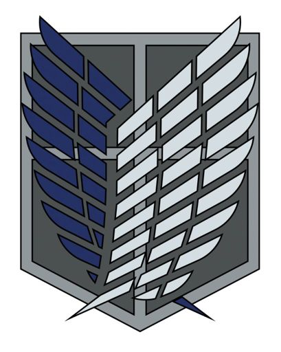

ИсторияТоп самых популярных персонажейИстория создания образа титановМангаПервый титанВооружённый силыРост титанов |
РазветкорпусРазведкорпус (調査 兵団 Chōsa Heidan) — самый малочисленный род войск, чьей задачей является поиск способа победы над титанами. Является движущей силой сюжета и истории, так как именно этот род войск наиболее активно ведёт сражения и изучение титанов. Несмотря на то, что Корпус не достиг грандиозных успехов, они по-прежнему символизируют «надежду человечества». Их эмблема известна как «Крылья Свободы»; они надеются, что когда-нибудь их усилия изменят мир к лучшему и вернут человечеству утраченные территории.  Данный род войск ответственен за исследование и поиск территорий, когда-то принадлежавших людям, а также освобождение их от титанов. Ещё до падения Стены Мария Разведкорпус занимался исследованием земель за пределами стен, однако вследствие огромных потерь во время постоянных сражений с титанами не смог продолжить исследование. До недавнего времени он обеспечивал необходимыми ресурсами территорию от района Трост до Шиганшины, готовясь к миссии по закрытию пролома в стене и битвы за отвоевывание Стены Мария. Одной из недавних неофициально закрепленных за Корпусом задач стало исследование и наблюдение за титанами. Учитывая возможность ведения безопасного исследования в пределах Стены (с тех пор как вариант прорваться через стену у титанов остался один), было выявлено большое количество важной информации, касающейся их переносимости боли, зависимости от солнечного света и даже касательно наличия или отсутствия у них интеллекта или логики мышления. <на главную |